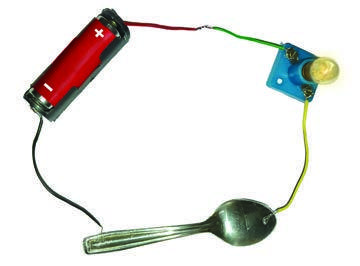
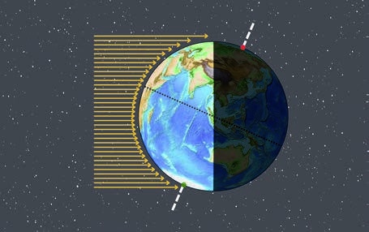

Today we are going to learn about Science is a Journey. Science is not a list of facts—it is an exciting journey of questioning and discovering!
1
Science is a Journey
Science helps us understand the world by asking questions, observing carefully, and testing ideas.
Science invites questions and investigation
Science explains the world from small to large scales
Scientific knowledge changes with new evidence
A phone camera improved over years because scientists kept testing new lenses and sensors and learning from results.
2
Going Deeper
In Grade 7, you will explore both the tiny (like cells) and the huge (like planets), learning how scientists think and how scientific knowledge keeps growing and improving over time.
Science is not a list of facts—it is an exciting journey of questioning and discovering!
📺 1 EVER EVOLVING WORLD OF SCIENCE Science is a Journey explained
Click to search on YouTube — or embed your video here
❓ Quick Check: What is one main goal of science?
✅ To understand and explain the natural world using evidence.
Page 2
≥ Science · Grade 7 ≤
Curiosity and Asking Questions
❓
Today we are going to learn about Curiosity and Asking Questions. Every big discovery begins with a simple, brave question!
1
Curiosity and Asking Questions
Curiosity is the habit of wondering “why?” and “how?” about things you see around you. Good scientific questions are clear, testable, and focused on one idea at a time.
Curiosity starts scientific thinking
Good questions are clear and testable
Observations help you form questions
Noticing plants near a window grow toward light can lead to the question: “Does light direction affect plant growth?”
2
Going Deeper
Scientists often start with observations, then ask questions that can be answered by collecting data. A strong question leads to a fair test and a meaningful conclusion.
Every big discovery begins with a simple, brave question!
📺 1 EVER EVOLVING WORLD OF SCIENCE Curiosity and Asking Questions explained
Click to search on YouTube — or embed your video here
❓ Quick Check: What is curiosity in science?
✅ The desire to ask questions and find explanations.
Page 3
≥ Science · Grade 7 ≤
Experiments and Fair Testing
🧪
Today we are going to learn about Experiments and Fair Testing. Experiments are like detective work—careful tests that reveal the truth!
1
Experiments and Fair Testing
An experiment is a planned test used to find out if an idea is correct. A fair test changes only one factor at a time (the independent variable) and measures what happens (the dependent variable).
A fair test changes only one variable at a time
Measurements and data make results reliable
Repeating trials increases confidence
Testing which paper towel absorbs most water by using the same water amount and timing for each brand.
2
Going Deeper
To make results trustworthy, you keep other factors the same (controlled variables), repeat trials, and record data neatly. This helps you reach conclusions based on evidence, not opinions.
Experiments are like detective work—careful tests that reveal the truth!
📺 1 EVER EVOLVING WORLD OF SCIENCE Experiments and Fair Testing explained
Click to search on YouTube — or embed your video here

❓ Quick Check: What is the independent variable?
✅ The factor you change on purpose.
Page 4
≥ Science · Grade 7 ≤
Science Everywhere: From Cells to Space
🌍
Today we are going to learn about Science Everywhere: From Cells to Space. Science connects the tiniest cell to the biggest galaxy—everything is linked!
1
Science Everywhere: From Cells to Space
The world of science covers many scales. Some scientists study living things, like cells inside your body, while others study Earth systems like weather and rocks.
Science studies living and non-living things
Science works at tiny and huge scales
Different fields connect to form a bigger understanding
Doctors use cell knowledge to treat disease, while satellites use space science to predict storms on Earth.
2
Going Deeper
Science also reaches far beyond our planet, helping us understand the Moon, the Sun, and the universe. Learning science builds a “big picture” of how nature works at every level.
Science connects the tiniest cell to the biggest galaxy—everything is linked!
📺 1 EVER EVOLVING WORLD OF SCIENCE Science Everywhere: From Cells to Space explained
Click to search on YouTube — or embed your video here

❓ Quick Check: Name one thing studied in biology.
✅ Cells or living organisms.
Page 5
≥ Science · Grade 7 ≤
Science Keeps Changing (Ever-Evolving Knowledge)
🧠
Today we are going to learn about Science Keeps Changing (Ever-Evolving Knowledge). In science, new evidence can rewrite what we think we know—and that is a strength!
1
Science Keeps Changing (Ever-Evolving Knowledge)
Science is “ever-evolving” because explanations improve when new observations and better technology appear. Scientists compare ideas with evidence, and weak ideas are corrected or replaced.
New evidence can change scientific explanations
Technology helps scientists observe more accurately
Science is self-correcting through testing and checking
Pluto was reclassified as a dwarf planet after better observations and clearer scientific definitions.
2
Going Deeper
This does not mean science is unreliable; it means science is self-correcting. Over time, repeated testing and peer checking help build stronger, more accurate knowledge.
In science, new evidence can rewrite what we think we know—and that is a strength!